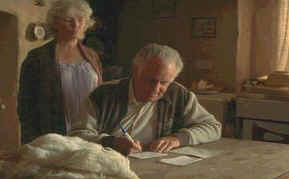

|
The great small British comedies of yesteryear maintained a
tradition of innocent larceny.
Happily, Waking Ned Devine harks back to that giddy
tradition. Add a touch
of local blarney natural to the tiny Irish village where the movie
is set and get ready for a delightful romp through a comic
landscape.
The eccentrics are led by Jackie Shaw, an
aging gent with a plan to pad his retirement with lottery dollars.
Jackie’s got the gift of gab and he convinces his fellow villagers
that you don’t need a Leprechaun to find his version of the Irish
pot of gold. Of course, there are complications and they pile on one after
the other. It’s all or no one if Jackie’s plans are to succeed,
and it’s up to Jackie to convince each villager of the need for
cooperation. It’s up to Michael O’Sullivan to convince the
lottery representatives that he’s entitled to the big check.
Jackie’s gaunt buddy makes up for a lack of confidence with
loyalty to Jackie and the plan. You won’t likely forget
Michael’s mighty funny motorcycle ride, but it’s Jackie that
keeps everything going with non-stop delight.
 |
|
Jackie signs them up. ©Fox |
Waking Ned Devine stars Ian Bannen as a man with the gift, a
vision pure of heart and lined with the dream of all men in small
villages everywhere, hitting the lottery. It's fitting that Bannen
gets his best role in years as Jackie Shaw since he comes right out
of those great Ealing comedies of the fifties with his debut film,
Private's Progress. Bannen plays Jackie Shaw with a warm smile and a
characteristic light in his eyes that charms his fellow players and
audiences alike. David Kelly is a brave Michael O’Sullivan, giving
his all for the production. The smaller roles feel like they were
plucked from a small Irish village.
Kirk Jones gets his debut writing and directing credits on Waking
Ned Devine. Where did this guy come from? Let’s hope he keeps
up the terrific work and finds another project to provide audiences
with some old fashioned joy.
Waking Ned Devine is beauty of a small movie
turned into a lovely DVD. The images grace the screen with ease and
accuracy, sharp enough to look through the larceny and see the
genuine good nature of this spirited folk comedy. The village colors
and seaside feeling is maintained in varied lighting circumstances.
Intimate interiors have a nice light balance and contrast is
excellent throughout the movie. The charming score is well served by
the Dolby Digital 2-channel audio. The accented dialog is easy to
understand.
|